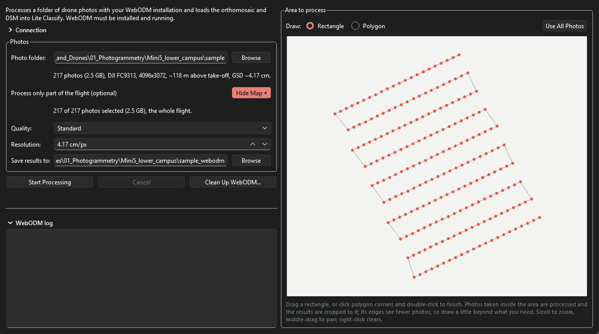
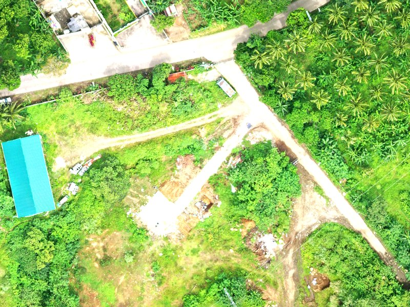
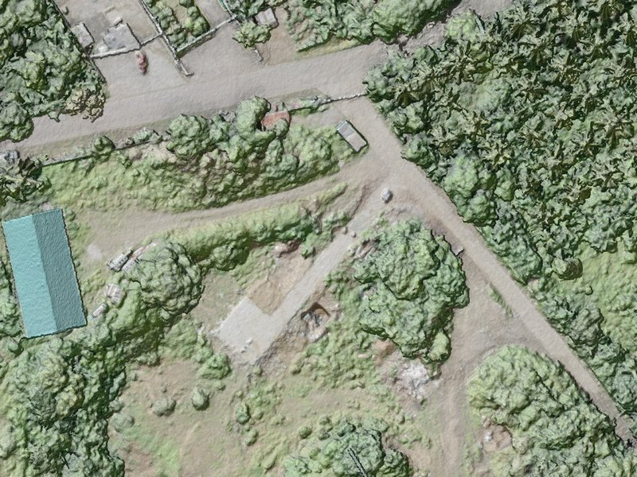
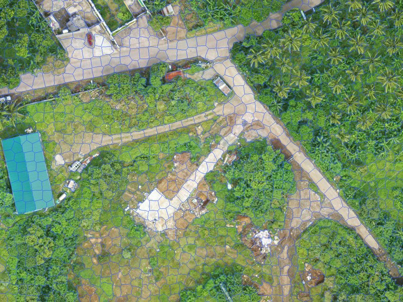
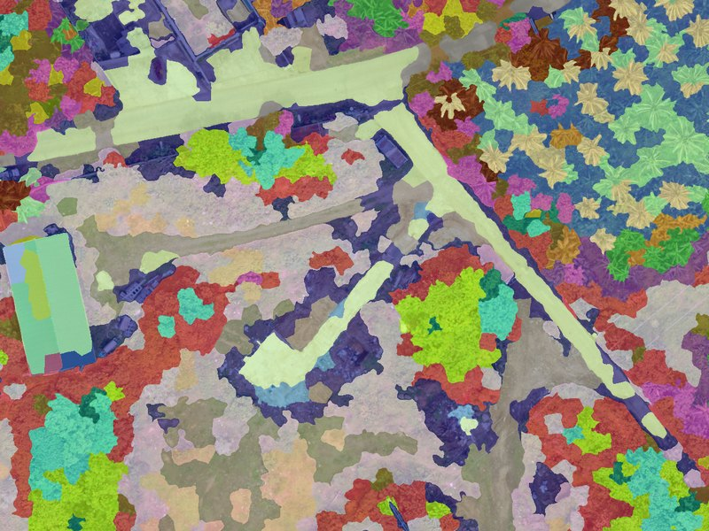
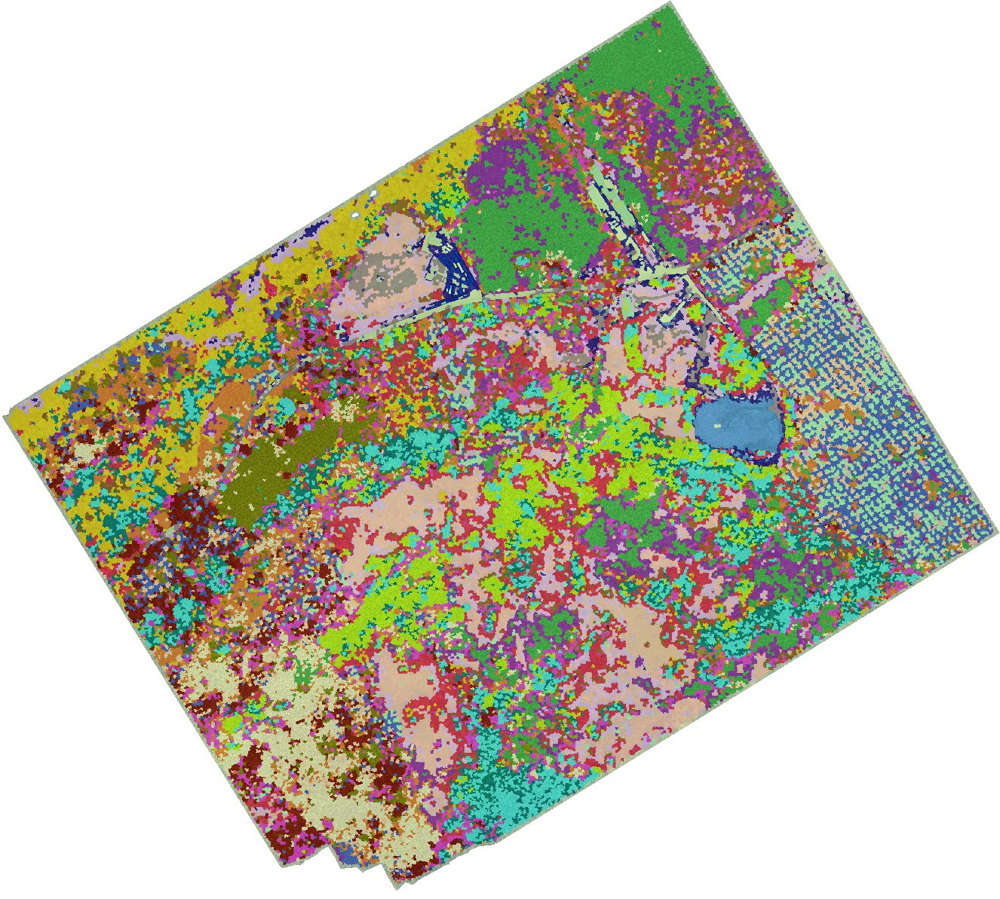
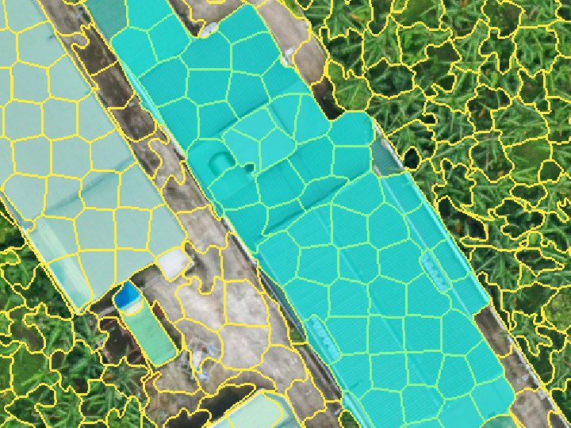
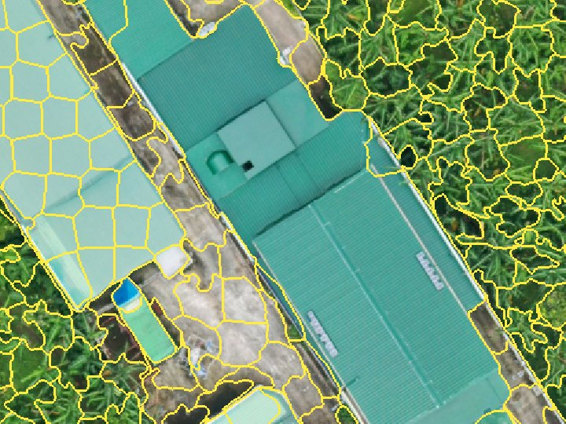
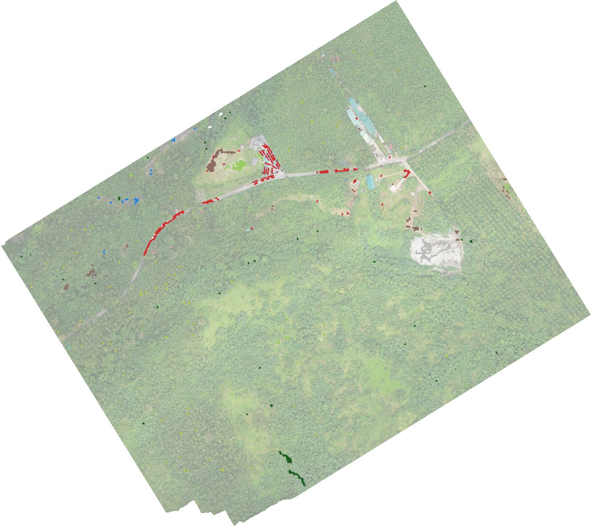
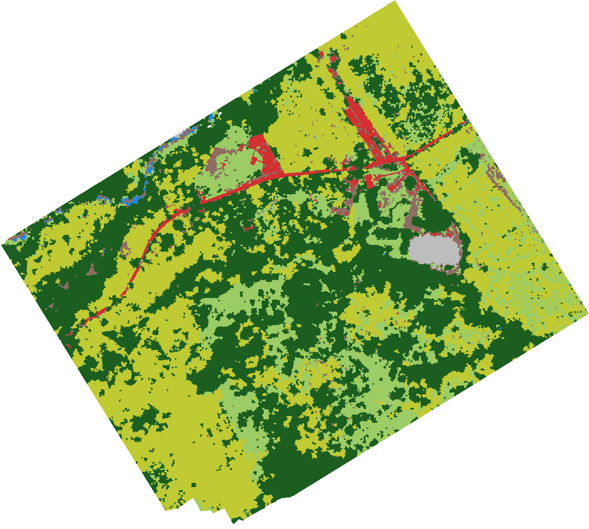

Part C · Workflow
Workflow, tab by tab
The worked example from start to finish: every control you touch, in the order you touch it, with the settings used for the figures in this manual.
6Tab 1 · Load and prepare imagery
6.1 Start from drone photos (optional, WebODM)
If you have the drone photos but no orthomosaic yet, Lite Classify can have WebODM make the orthomosaic and DSM and then load them. Lite Classify contains no photogrammetry of its own. It sends the photos to a WebODM that you install and run yourself (free and open source, from OpenDroneMap), with one fixed set of processing settings, and downloads only the orthomosaic and the DSM. Skip this step if you already have an orthomosaic from WebODM, Metashape, Pix4D or similar software.
- Install and start WebODM. Its Processing Nodes page must show a node online.
- Choose Import › Orthomosaic from Drone Photos (WebODM)…, or click No orthomosaic yet? Process drone photos… under Input Data on Tab 1. The WebODM window opens beside the main window; you can keep working while it runs.
- Under Connection, click Find to locate WebODM on this PC (the Windows app on port 29800, or Docker on port 8000), or type its address. Enter your WebODM username and password. Remember me keeps the password, encrypted for your Windows account, and the Connection section then starts folded.
- Under Photos, pick the Photo folder. The line below summarises it: the number and size of the photos, the camera, the image size, the flight height above take-off, and the ground sampling distance (GSD) estimated from them.
- To process only part of the flight, click Choose Area. A map of the photo positions opens beside the form. Drag a rectangle, or pick Polygon, click the corners and double-click to finish. Only photos taken inside the area are sent, and the results are cropped to it. Draw a little beyond what you need: the edges of the area are seen by fewer photos. Scroll to zoom and middle-drag to pan; right-click or Use All Photos clears the area. If an orthomosaic in the same UTM zone is loaded, it is drawn under the photos.
- Choose the Quality. Standard aligns the photos at half resolution. Maximum aligns at full resolution, which is much slower for little geometric gain. Resolution is the orthomosaic's pixel size and starts at the estimated GSD; the DSM is made at four times this.
- Save results to defaults to a folder beside the photo folder, with
_webodmadded to its name. The results areodm_orthophoto.tifandodm_dsm.tif. - Click Start Processing. Lite Classify uploads the photos, then follows WebODM's stages (aligning photos, building the dense cloud, the DSM and the orthomosaic) with a progress bar, the elapsed time and WebODM's own log. At the end it downloads the two files, checks them, removes the job from WebODM and offers to load them into Tab 1.

Long runs. A few hundred photos can take hours. You can close the WebODM window, or Lite Classify itself, while WebODM works: a button in the status bar shows the progress, and the next time Lite Classify starts it reconnects to the job (if the password was not remembered, log in and click Reconnect). Closing Lite Classify during the upload stops the job, because a half-uploaded job cannot be resumed. Cancel stops the job and removes it from WebODM. Clean Up WebODM… lists jobs left in WebODM's Lite Classify project and leftover upload files on this PC, and removes them after you confirm.
No ground control points are used: positions and heights come from the photos' GPS, so the map can be shifted by a metre or so, and the DSM's absolute heights can be off by several metres. Height above ground, which the classifier uses, is not affected by a constant offset.
6.2 Load the orthomosaic
- On Tab 1, under Input Data, click Browse next to Orthomosaic (or use Import › Orthomosaic) and pick the GeoTIFF. You can also paste a path and press Enter. A WebODM result loads here by itself when you accept the offer at the end of its run.
- The image fills the viewer. The line under the resample slider shows its native resolution; for the worked example, 3.304 cm/px and 32,090 × 28,875 px.
- Very large images load at reduced resolution. Above about 400 megapixels (less if memory is short), Lite Classify reads the file straight at a coarser resolution, using the file's own overviews, instead of filling memory. The console says so, and the resample controls start at the loaded resolution. The worked example (0.93 gigapixels) loads this way.
Lite Classify reads the first three bands as red, green and blue, and uses the file's mask (or alpha band) to ignore empty corners of rotated mosaics. Building overviews (pyramids) in your photogrammetry software or GIS makes large files load faster.
6.3 Add a DSM (optional, recommended)
- Click Browse next to Elevation Model (Optional DSM) and pick the surface model.
- Only the file's header is read now. Heights are matched to the working grid when they are first needed, normally during segmentation, by their coordinates. The DSM may have a different pixel size and extent from the orthomosaic (the example's is 13.2 cm against 3.3 cm).
With a DSM the classifier gets 24 features instead of 19. Unload DSM drops it again; do that before segmenting if you want a colour-only model.
6.4 Resample to a working resolution
Very fine imagery makes more, smaller, noisier objects and uses more memory. Resampling re-reads the file at a coarser resolution. It always reads from the original file, so going coarse and back loses nothing.
- Type a Target Resolution of 10 cm/px, or move the Resample Scale slider. The cm/px box appears only for projected coordinate systems such as UTM.
- Check the preview line under the slider: it shows the target resolution and the new image size, 10,603 × 9,541 px for the example.
- Click Apply Resample. Lite Classify checks free memory first and suggests a coarser resolution if the result would not fit.
Resampling clears downstream work. The segmentation, Discover groups, the classification and all training samples are tied to the old pixel grid and are cleared. Your class names and colours are kept, and so are accuracy points (they are stored in map coordinates). Resample first, then segment.
6.5 Colour correction
Click Color Correction to open the panel. Auto-Correct stretches the image so its darkest 2% and brightest 2% of values become black and white. The sliders adjust brightness, contrast, hue, saturation, temperature and the red, green and blue gains; Reset Colors undoes everything.


What correction changes. The corrected image is what the segmenter sees, so it changes where boundaries fall. The features, however, are always measured on the original, uncorrected pixels. Correction helps segmentation on dull or hazy imagery but does not shift the values the classifier learns from.
6.6 Elevation overlay
Tick Show Elevation above the viewer to lay the shaded DSM over the image, and set its Opacity (default 60%). Use it to confirm the DSM lines up with the image: roof edges and crown outlines should sit exactly on their shading.

7Tab 1 · Segment the image
| Control | Range | Default | Worked example | Start here |
|---|---|---|---|---|
| Object Size | 0.5–10,000 m² | 10 m² | ~8.6 m² | The size of one object on the ground. Aim for a few m² to a few tens of m², and small enough that the narrowest thing you map gets objects of its own. Sets Num Segments from the image's valid area. |
| Num Segments | 100–2,000,000 | from Object Size | 60,000 | The same choice as a count. Edit either box; the other follows. Whichever you set last is kept when you resample. |
| Compactness | 0.01–1.00 | 0.15 | 0.15 | Keep 0.15. Lower only if segments cut across clear edges. |
| Sigma (Smoothing) | 0–10 | 2.5 | 2.5 | Keep 2.5. Raise if segments look ragged or grid-like. |
| Colour/texture at | native–working | working grid | 3.30 cm/px | Set to the native resolution when the image allows: texture then comes from full detail (Part B, 5.3). Shown for images in projected coordinates. |
| Segmentation Engine | CPU · GPU | GPU if found | GPU | Use GPU when available, and keep the same engine for the whole project. |
- Set Object Size (or type a segment count) and the other controls above. Read the plan line under Num Segments: it confirms the object size in m² and pixels, and whether the run will be done in one go or as N tiles.
- Click Run Segmentation. Lite Classify checks memory first. The console counts through the steps: segmentation (tile by tile if needed), display layers, polygons, features, neighbour features and height above ground.
- To stop, click Cancel beside the button. The run stops at its next checkpoint (between tiles, or during feature measurement), and the previous segmentation, if there was one, is kept unchanged.
- When it finishes, the console prints the object count and time, and the app opens Tab 2.
- Return to Tab 1 and tick Show Segment Boundaries to inspect the result over the image.

Checklist before you move on. (1) No segment mixes two of your classes. (2) The smallest things you want to map, such as narrow tracks, a stream or single crowns, get their own segments. (3) Large uniform areas are not shattered into hundreds of slivers. If (1) or (2) fails, raise Num Segments. If only (3) fails, you can live with it.
8Tab 2 · Discover classes
Discover is optional, but it is the fastest way to a good class list and a first set of training samples. You can skip straight to Tab 3 and label from scratch.
8.1 Find groups
- Under Find Groups, keep both Appearance (deep features, DINOv2) and Colour, texture, shape & height ticked.
- Set Number of groups (5–60, default 30) to well above the number of classes you expect. The example asked for 20 for an expected six or seven classes.
- Keep Leave out segments at the image edge ticked: their patches are partly empty and would group by that.
- Click Find Groups. The first run computes the DINOv2 appearance of every segment (the slow part, done once per segmentation) and then clusters. Later runs with other settings reuse it. Cancel, beside the button, stops the appearance step; press Find Groups to start it again.
Backbone (experimental DINOv3). Under Appearance, Backbone chooses the model that describes each patch. DINOv2 ViT-S/14 (bundled) is the default and needs nothing else. DINOv3 ViT-S/16 and ViT-S+/16 are experimental and not included: request access from Meta, download the backbone file (dinov3_vits16_pretrain_lvd1689m-….pth or dinov3_vits16plus_pretrain_lvd1689m-….pth) under Meta's DINOv3 License, and choose it when asked. Lite Classify checks the file, reads it where it is, and never copies it into a workspace. Switching backbone recomputes the appearance of every segment, rebuilds the groups, and means training a classifier that used deep features again. The workspace records which backbone made its features; don't compare or combine results from the two without saying so.
8.2 Review a group
The Groups list shows one card per group (Group_01, Group_02…, largest first) with its colour, segment count and a strip of sample tiles. Each tile shows the segment outlined in cyan in the middle third, with its surroundings. Filter it (All, Unnamed, Named, Ignored) and sort it (Largest first, or Look-alikes together to put similar groups side by side). Click a card to open it in the middle panel.
- The gallery scrolls through every tile of the group, a square of image around each segment with its outline in cyan. Double-click a tile to fly the map to it.
- The map on the right shows the selected group, all groups, or named groups only (View), with an on/off Group overlay, its opacity, and Segment edges.
- Ask of each group: is this one cover type? If yes, name it. If it is two, split it. If it is the same as another, merge them.


8.3 Name groups
- With a group selected, pick a class in Name this group, or type a new name and click Add Class. A new class is created at once, with a suggested colour from its name (trees dark green, grass yellow-green, water blue, buildings red, …), and appears in Tab 3 too: the two tabs share one class list.
- Several groups can share a name. The example named 12 of its 22 groups: five Agricultural, two Natural canopy, two Built-up, and one each of Grass, Bare soil and Solid waste. Ctrl-select several cards to name them together.
- Right-click a class in the dropdown to rename it, change its colour or remove it.
Leave a group unnamed when you are unsure; unnamed groups simply do not become training samples.
8.4 Merge, split, ignore and move
| Tool | Use it when | How |
|---|---|---|
| Merge… | Two or more groups are the same cover type | Ctrl-select the cards, or pick from the suggested look-alikes, then Merge Ticked. |
| Split… | A group mixes two cover types | Split into 2–4 by Appearance, Height above surroundings (DSM) or Brightness. A preview shows every tile of each part before you apply. |
| Ignore Group | A group is noise: shadows, edge artefacts, mixed odds and ends | It stays out of training and out of the views. |
| Find Similar Elsewhere | You want look-alikes from other groups | Lists the nearest segments outside the group to move in. |
| Move tiles | A few tiles are in the wrong group | Select tiles (click, Ctrl/Shift-click), right-click, move to a group, a new group, or out of all groups. Right-clicking a segment on the map does the same. |
In the example, Solid waste came from splitting a bare-ground group by appearance: refuse and the cleared apron around it had been grouped together.
8.5 Send named groups to Classification
- Click Send Named Groups to Classification. The dialog lists each class with its groups.
- Set Typical segments per group (default 12): the segments nearest each group's centre, so the most representative ones.
- Choose Add to existing training samples or Replace the existing samples of these classes, then Send and Open Classification.
Then File › Save Workspace: groups and appearance features are saved with the session.
9Tab 3 · Classes and training samples
9.1 Classes
- Classes created in Discover are already here. To add one, type a name in Enter new class name…, click Add and pick a colour.
- The order matters: it sets each class's value in the exported raster. The example's order: Natural canopy = 1, Agricultural, Grass, Bare soil, Solid waste, Built-up, Stream = 7.
Double-click a class to rename it or change its colour. Merge Selected Classes folds two or more classes into one (select them with Ctrl-click). Remove Selected Class deletes a class; Clear Selected Class and Clear All Training Data drop samples but keep classes. All four ask before acting, and an existing classified map is updated to match.
9.2 Click and paint samples
- Click a class in the list to make it active. It turns bold.
- Click an object in the viewer to add it as a sample of that class. It is tinted in the class colour, and the count beside the class name goes up.
- Ctrl + drag to paint: every object the cursor crosses joins the active class.
- Click a sample again to remove it.
9.3 Grow a selection by similarity
- Click Selection Mode: OFF to turn it on. Clicks now select instead of labelling; selected objects show in cyan.
- Click one object as a seed, then drag Grow Tolerance up. The selection spreads through touching objects similar to the seed.
- Click Assign Selection to Active Class, or Clear Selection. Ctrl+Z undoes selection steps.
How the tolerance works, and why it can leak
Similarity uses six features: mean red, green, blue and brightness, GLCM contrast and homogeneity. Each is divided by its spread across the whole scene, and a neighbour joins if its distance to the seed's average is within tolerance × √6. Growth spreads through any touching object that passes, so a high tolerance can cross into different-looking ground. Start low and raise it in small steps.
9.4 Merge fragments into one object
SLIC cuts large objects (a long roof, a big crown) into pieces, and each piece then has the wrong area and shape. Merge them so the classifier sees the real outline.
- With Selection Mode on, select the pieces (click, grow, or Ctrl+drag).
- Click Merge Selection into Object. The pieces become one object, its features are recomputed, and its neighbours' context features are updated. If the pieces were samples of different classes, the console warns and the first class in the list wins.


A m² roof that SLIC split into pieces. Merging cannot be undone, short of re-running segmentation.
9.5 Find similar segments, and what to label next
- Right-click an object › Find Similar Segments lists the 20 objects nearest to it in appearance and features. Tick the right ones and add them to a class. The dialog stays open, so you can keep going.
- What to Label Next… (after training) lists the objects the classifier is least sure about, at most two per Discover group so they are spread across the scene. Each shows its two leading classes. Labelling these teaches the model the most per click.
- Right-click › Show Its Group jumps to the object's Discover group.
9.6 Where to put samples

- Spread samples across the whole scene, not in one cluster. Light, shade and slope change from place to place.
- Cover every look a class has. Bare soil covers graded earthworks, compacted tracks and the cleared apron; Built-up covers teal, red and grey roofs, the road and concrete yards.
- Only label objects you are sure of. One wrong sample teaches the model a wrong rule. Skip objects that straddle two classes, such as a crown hanging over a track.
- Aim for at least as many samples per class as there are features (44 here) for a trustworthy separability check. The example's Stream had 20, and the check flagged it.
10Tab 3 · Train, classify, generalise and export
10.1 Check class separability
Click Check Class Separability before training. The window shows the pairwise table, the closest pairs with a one-line reason each, and a signature plot for the pair you pick in Signature plot pair. Copy Image puts it on the clipboard, and it is saved as class_separability.png. How to read it: Part B, 5.7.
10.2 Train and classify
- Tick Use deep appearance features to give the classifier the 20 DINOv2 components as well (needs Find Groups with Appearance run once). The example used it: 44 features.
- Click Train Classifier. You need samples in at least two classes. The console lists every feature used and the number of samples.
- Click Classify All Segments. Every object gets a class within seconds, the sieve is applied, and the view switches to the classified map.
10.3 Check with the views
The view buttons switch what the viewer shows: Raw Ortho (it becomes the Raw/Classified toggle after classifying), Segmented (objects in their mean colour) and Blend Overlay (classes over the image). The opacity slider and switch control the overlay; the blend mode is Multiply (tints the image and keeps its texture, the default) or Normal. Flip between them often: errors that hide in one view jump out in another.
Drag across each pair below to compare the image with the worked example's map, at five places in the survey:
10.4 The retraining loop
Retraining is the core of the method. Part B, 5.8 replays it on the example's own labels.
- Scan the whole map in Blend Overlay at 50–70% opacity. Note each kind of error: "dry stream bed read as Bare soil", "banana edge read as Natural canopy".
- Add a few correct samples of each kind, in different parts of the scene. Use What to Label Next for the cases the model itself is unsure about.
- Train Classifier, then Classify All Segments again. All samples, old and new, are used.
- Repeat until a round changes little. Then measure on Tab 4 instead of judging by eye.
10.5 Set a minimum mapping unit
Under Post-Classification Generalization, set the MMU either in pixels (0–2,000) or as an area in m²; the two boxes stay in step with the working grid (at 10 cm, 1,000 px = 10 m²). Patches of one class smaller than this are absorbed by the class around them. The map updates when you release the slider or leave a box. The example used 0; see Part B, 5.9.
10.6 Export and save
- Click Export Final Classified TIF. The dialog suggests
<name>_classified.tifin the workspace folder. - Lite Classify writes a single-band GeoTIFF (value 1 = first class in the list, 2 = second, …, 0 = no data) with your colours embedded, plus a
.qmlstyle file of the same name for QGIS. - File › Save Workspace (Ctrl+S) keeps the session: segments, features, appearance features, groups, classes, training samples, the classification, accuracy points and iterations.
Export again after you retrain. The exported GeoTIFF is a snapshot. Saving the workspace does not update it; the accuracy assessment, however, always uses the current map.

- 1 Natural canopy
- 2 Agricultural
- 3 Grass
- 4 Bare soil
- 5 Solid waste
- 6 Built-up
- 7 Stream
11Tab 4 · Assess accuracy
11.1 Choose a reference source
Under Ground Truth Source, pick one:
- Import Ground Truth CSV: field points you collected. Browse to the CSV; tick Also generate expert-visual points to add photo-interpreted points on top.
- No Ground Truth Available (Generate Expert Points): Lite Classify places random points for you to label from the image.
A ground-truth CSV needs an x column, a y column and a class column, with coordinates in the orthomosaic's own coordinate system. Header names are matched loosely (x/lon/easting, y/lat/northing, class/reference_class/label); class names must match Tab 3 exactly, or the import stops and lists the mismatches.
11.2 Choose a design and generate points
- Under Random Point Generation, pick a Design: Simple random, or Stratified by map class (Part B, 5.10).
- For stratified, set Min per Class (default 50). Each class gets the larger of that minimum and its area share of Points to Add. The strata are the classes of the current map, so classify first.
- Click Generate. Points never fall on training objects. A stratified sample records each point's stratum and a seed, so it can be reproduced; there can be one stratified sample per map.
The example drew a stratified sample with a minimum of 50 per class on its nine-class map at the time: points, seed .
11.3 Label the points
- Double-click a point in the list, or press . and ,, to fly to it. The viewer shows the raw image only.
- Decide what is under the point. Right-click it and choose a class, or tick several points and use Assign checked to.
- Use Save Points as you go; a long labelling session is real work.
Label what is under the point, not what is nearby. If the point sits on a roof edge under an overhanging crown, label what covers that spot from above. If you truly cannot tell, delete the point rather than guess. Ideally, someone other than the person who picked the training samples does the labelling.
11.4 Run the assessment
Click Run Accuracy Assessment. Unlabelled points are left out (the warning says how many). Lite Classify reads each point's class from the current map with the sieve applied, the same map Export writes. The results window opens beside the main window, so you can keep working while it is open. It writes to the workspace folder:
accuracy_report.csv: the error matrix with totals, user's and producer's accuracy, overall accuracy, sample size and a source note; for a stratified sample, also the area-weighted estimates, estimated class areas and 95% confidence intervals.accuracy_matrix.png: the matrix as a figure.accuracy_points.gpkg: every point with its reference class, map class, source and stratum, ready for GIS.
11.5 Read the result
The worked example's own assessment
The matrix below is the example's accuracy_report.csv: stratified points labelled by photo-interpretation of the orthomosaic with the classification hidden. Cells are point counts. The user's and producer's accuracies in the margins, and the overall accuracy, are the area-weighted estimates with their 95% confidence intervals. Photo-interpreted points are reference data, not field-checked ground truth.
- Overall accuracy is ± (area-weighted), against from raw counts. The three big classes, which hold about 94% of the map, all reach 89–92% on both measures.
- The largest confusion is Natural canopy ↔ Agricultural: 12 reference canopy points mapped as Agricultural and 7 the other way. These are the hardest calls for the interpreter too.
- Bare soil is the weak class (user's ): its row draws errors from every other class, and it is over-mapped. Bare soil here is a family of surfaces: tracks, earthworks, dry stream bed, the apron.
- Solid waste and Stream are reliable but incomplete: almost everything the map calls Solid waste or Stream is right (user's 98% and 100%), but the map finds only about three-quarters of each. Four of Stream's five misses went to Bare soil: a dry bed, seen from above.
| Class | Mapped (ha) | Estimated (ha) | 95% CI (ha) | Reading |
|---|---|---|---|---|
| Natural canopy | 22.17 | 21.34 | ±2.62 | Within the interval |
| Agricultural | 20.97 | 20.85 | ±2.57 | Within the interval |
| Grass | 8.53 | 9.56 | ±1.44 | Within the interval |
| Bare soil | 1.44 | 0.98 | ±0.35 | Over-mapped by about half |
| Solid waste | 0.44 | 0.61 | ±0.14 | Under-mapped (the margin) |
| Built-up | 1.08 | 1.19 | ±0.44 | Within the interval |
| Stream | 0.10 | 0.19 | ±0.07 | Under-mapped by about half |
The estimated areas correct the mapped areas for the errors the sample found. For anything reported in hectares, quote the estimate and its interval, not the mapped area.
Next retraining target: the Bare soil row. Split it into the surfaces it mixes (or accept it as a mixed class and say so), and add Stream samples where the bed is dry.
11.6 Iterations: keep and roll back rounds
Every Run Accuracy Assessment adds a row to the Iterations list: its number, overall accuracy, and how many samples and points it used. Each row keeps everything that run was based on: the training samples, class names, Discover group names, accuracy points and the classified map.
- Results (or double-click) shows that run's matrix again.
- Restore returns the session to that iteration, undoing later changes that made things worse. Tick First keep the current state in the list as a checkpoint to be able to come back.
- Delete removes a row. Iterations are saved with the workspace and cleared when you segment again.